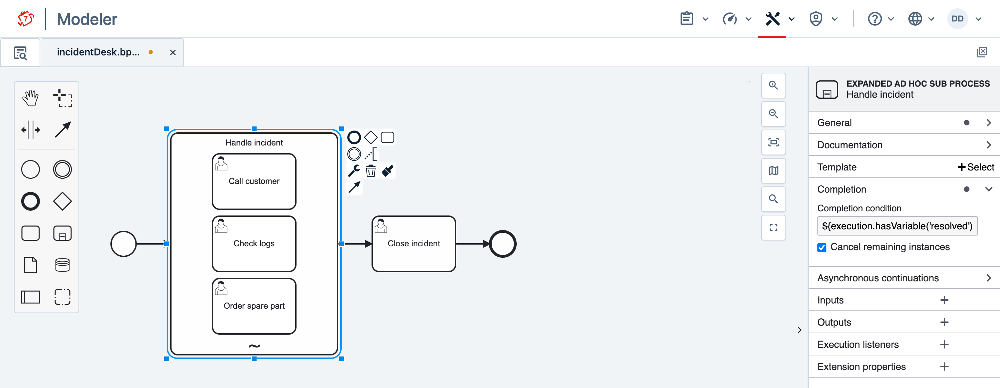
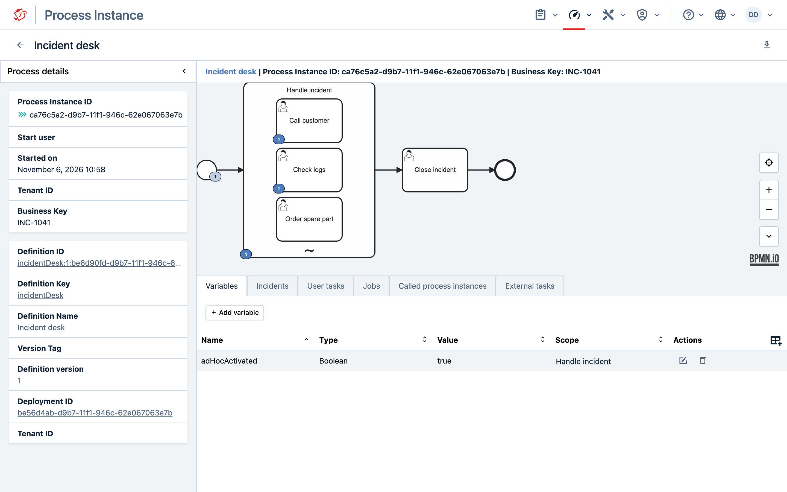
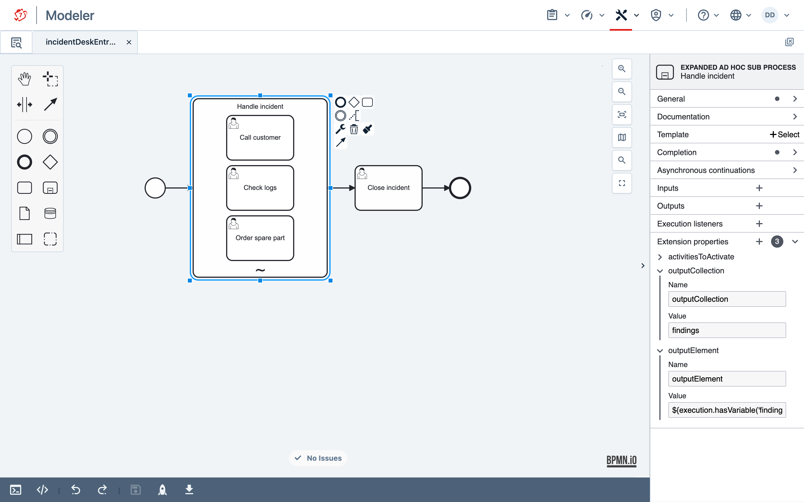
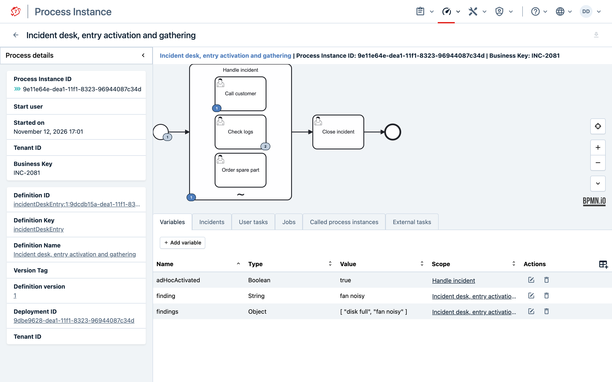
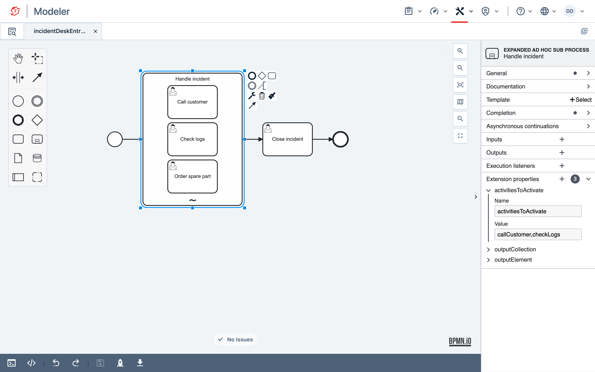
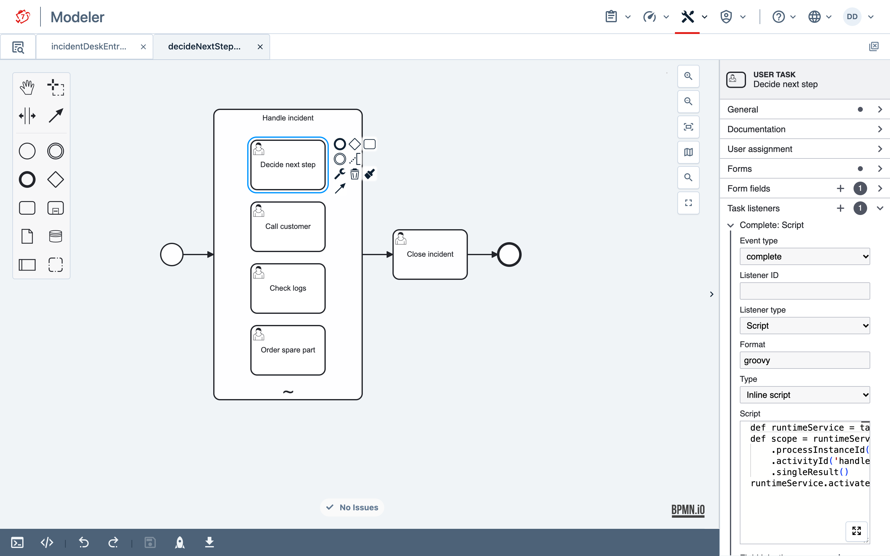
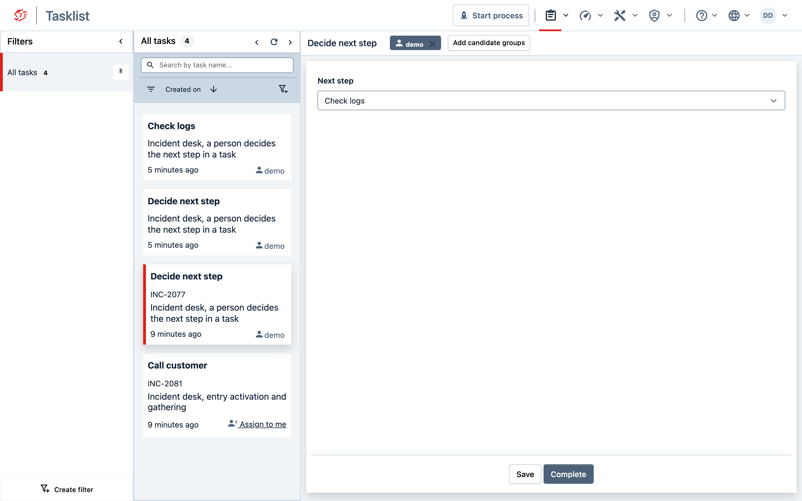

Ad Hoc Sub-Process
Available from 3.0.0
The ad hoc sub-process is available from CIB seven 3.0.0.
A process model normally prescribes the order in which activities are executed. An ad hoc sub-process deliberately does not.
Its activities carry no sequence flows between them, beyond any pair the model chooses to order, and nothing in the model says which of them runs, when, or how many times. Something outside the process decides that while the instance is running — which is what the BPMN specification means when it places the performers of an ad hoc sub-process outside the model.
Use cases for this shape are those in which the sequence of work is not known when the process is modeled:
- Case handling, where a caseworker picks the next step from a set of permitted ones
- Investigation and incident handling, where the steps taken depend on what the previous step found
- Any driver that decides its next move from the outcome of the previous one, and may repeat a step or skip it entirely
The driver can also be an AI agent inside the process, see Agentic Ad Hoc Sub-Process.
The example used throughout this page is an incident desk: three things a handler may do, in any order and as often as needed, until the incident is resolved.
The absence of sequence flows between the three tasks is the whole point, and the tilde at the bottom of the shape is how the notation says so.
In the CIB seven Modeler, draw an expanded sub-process and choose Change element → Ad-hoc sub-process. The Completion group of the properties panel holds the completion condition and Cancel remaining instances:

Three things decide most of how the desk behaves:
- The completion condition. Leave it empty only if the scope should end as soon as nothing runs in it: without a condition, the scope is left once at least one activity has been performed and none is still active, so the incident desk would close after its first task.
- Cancel remaining instances, checked by default. When the condition becomes true, the tasks still open are cancelled and the scope is left at once. Unchecked, the scope waits for them to finish, but starts nothing new.
- Boundary events on the tasks inside. A timer or a message attached to one of them must be interrupting; the non-interrupting kind is rejected at deployment.
To operate such a scope, the process engine offers two verbs on RuntimeService — start something, and finish the scope:
List<String> activateAdHocSubProcessActivities(String executionId, Collection<String> activityIds);
void completeAdHocSubProcess(String executionId);
Both take variables as a further argument, and activation also has a builder for the case where one activity is started twice with different values. They are shown under Provide Variables and Explicit Completion.
Both are also available over REST:
POST /execution/{id}/ad-hoc-activities/activate
POST /execution/{id}/ad-hoc-activities/complete
The REST paths on this page are relative to the root of the REST API, which is /engine-rest in CIB seven Run.
Neither Cockpit nor Tasklist has a control that starts an activity of an ad hoc sub-process. The caller is one of these:
- your own application, a custom task form or a script, calling the REST API;
- the model itself, which can name activities to start when the scope is entered (Entry Activation);
- a listener or a delegate in the process, calling the Java API — for example a task in the scope that asks a person in Tasklist what to do next (Let a Person Choose in Tasklist).
Ad Hoc Sub-Process by Example
Every call is addressed to the execution of the ad hoc sub-process itself, not to the process instance. Find it by querying for the execution that sits on the scope’s activity:
Execution scope = runtimeService.createExecutionQuery()
.processInstanceId(processInstanceId)
.activityId("handleIncident")
.singleResult();
Over REST, the same query is GET /execution?processInstanceId=…&activityId=handleIncident.
Entering the scope starts nothing, so immediately after the instance is started there are no tasks. The instance waits on the scope with nothing running, and it waits like that between activations too: that is the normal state of an ad hoc sub-process, not a stuck one. Starting two of the activities is a single call:
List<String> instanceIds =
runtimeService.activateAdHocSubProcessActivities(scope.getId(), Arrays.asList("callCustomer", "checkLogs"));
The same over REST:
POST /execution/anExecutionId/ad-hoc-activities/activate
{
"activities": [
{"activityId": "callCustomer"},
{"activityId": "checkLogs"}
]
}
The response is 200 with the id of each created activity instance, in request order:
[
{"activityId": "callCustomer", "activityInstanceId": "callCustomer:1f9c…"},
{"activityId": "checkLogs", "activityInstanceId": "checkLogs:1f9d…"}
]
In Cockpit, the instance now has one running instance on each of the two tasks and none on the third, and its variables show the activation flag adHocActivated (see Limitations):

The two tasks appear in Tasklist like any other task. To complete one over REST, find it the usual way, for example with GET /task?processInstanceId=…&taskDefinitionKey=checkLogs.
A list is returned rather than a map because the same activity may legitimately be started more than once in one call: naming checkLogs twice starts two independent instances and returns two different ids. An entry is null when no activity instance exists yet — because the activity is asynchronous and waiting for its job, or because an earlier entry in the same call satisfied the completion condition.
Only activities can be started. An activity is directly startable if it has no incoming sequence flow from within the scope; naming anything else answers 400 and lists what may be started instead. Embedded subprocesses and nested ad hoc sub-processes are activities and can be started like any other.
The call is all or nothing. Everything is validated before anything is created, so a request naming one activity that is not directly startable starts none of them at all and answers 400.
The incident desk ends through its completion condition, ${execution.hasVariable('resolved') and resolved}. Completing a task with resolved set to true — from a form field in Tasklist, or with the completion over REST — satisfies it, and the scope is left:
POST /task/aTaskId/complete
{"variables": {"resolved": {"value": true, "type": "Boolean"}}}
Whatever its condition says, a scope can also be left explicitly:
POST /execution/anExecutionId/ad-hoc-activities/complete
{}
which answers 204.
Operational Semantics
Provide Variables
Variables can be passed to the activities being activated. The Java API takes them as a map keyed by activity id:
Map<String, Map<String, Object>> activityVariables = new HashMap<>();
activityVariables.put("callCustomer", Collections.singletonMap("phone", "+49 89 143866-0"));
runtimeService.activateAdHocSubProcessActivities(scope.getId(), Arrays.asList("callCustomer"), activityVariables);
Over REST they are carried by each entry instead:
{
"activities": [
{
"activityId": "callCustomer",
"variables": {
"phone": {"value": "+49 89 143866-0", "type": "String"}
}
}
]
}
The variables are local to the activated activity: each started child gets its own copy, and they do not become process instance variables.
The Java signature above keys them per activity definition, so naming the same activity twice in one call gives both performances the same entry. To perform one activity twice with different values, use the builder instead:
runtimeService.createAdHocSubProcessActivation(scope.getId())
.startActivity("checkLogs").setVariable("system", "mail")
.startActivity("checkLogs").setVariable("system", "billing")
.execute();
Variables belong to the activity named before them, so setting one before the first startActivity is rejected. Nothing is started until execute, which returns the activity instance ids in the order named, exactly as the other method does.
Over REST there is nothing to choose: the request body is already a list of entries, and each entry keeps its own variables.
Activities with Loop Characteristics
A child that carries multi-instance loop characteristics is started through its generated body. One call therefore starts the whole multi-instance activity, with all of its instances, rather than one of them, and the id returned is that of the body’s activity instance:
[{"activityId": "reviewDocument", "activityInstanceId": "2c7a8e15-…"}]
An activity instance id consists of the activity id, a colon and a unique part, as in callCustomer:1f9c… above, only while that fits in 64 characters. Otherwise the engine returns the unique part alone. A body’s id is long, because reviewDocument#multiInstanceBody: alone has 33 characters, so it usually comes back in the short form, as here. Both forms are valid ids. To tell which activity an entry belongs to, read its activityId rather than the id.
Gather Results
An activity of an ad hoc sub-process may be performed many times, and each performance writes its output to the same variable, so by default only the last result survives. Two camunda:property entries on the sub-process keep them all; in the Modeler they are entered in the Extension properties group of the sub-process. Here every activity that leaves a finding behind — from a form field, or from an output parameter of the task — adds it to a list:
<camunda:property name="outputCollection" value="findings" />
<camunda:property name="outputElement" value="${execution.hasVariable('finding') ? finding : null}" />

outputCollection names the variable to gather into, outputElement is evaluated each time an activity completes and its value is appended; a null value appends nothing. Guard the expression the way the completion condition is guarded: a bare ${finding} fails when an activity completes before anything has set finding, and that activity then cannot be completed at all.
Reading the result is an ordinary variable read; the variable holds a java.util.ArrayList:
List<Object> findings = (List<Object>) runtimeService.getVariable(processInstanceId, "findings");
The variable outlives the sub-process, so it is still there after the scope has been left, and it is visible in Cockpit and over REST like any other. After Check logs has been performed twice, Cockpit shows both findings in one list:

Choose a name that nothing else writes to: if the variable already holds something other than a collection, appending to it fails, and so does the completion of the activity.
One expression serves every activity of the sub-process. It is evaluated against the activity that completed, so execution refers to that activity, and together with the null rule that lets a single expression gather selectively:
<camunda:property name="outputElement"
value="${execution.currentActivityId == 'checkLogs' ? finding : null}" />
Here only Check logs contributes, and it must always set finding. Without such a condition every completing activity contributes, including one that produced nothing: once finding exists, the expression reads what an earlier performance left and appends it a second time.
The same handle also records which activity produced an entry — ${execution.currentActivityId} gathers the names rather than the values.
Setting one property without the other is rejected at deployment.
Three behaviours are worth knowing before relying on this:
- An activity with loop characteristics contributes one entry for the whole loop, not one per iteration. For that entry,
execution.currentActivityIdnames the generated body, such asreviewDocument#multiInstanceBody, rather than the activity itself. - Activities connected by a sequence flow inside the scope contribute one entry, at the end of the chain. If the completion condition is met on a flow inside the chain and
cancelRemainingInstancesistrue, the entry is taken there instead, and the rest of the chain is not performed. - A cancelled activity contributes nothing, whether it was cancelled by an interrupting boundary event or because the completion condition was satisfied. Neither does an event subprocess: it is a handler, not a performance.
Entry Activation
Instead of leaving every activation to the API, the model can name the activities that are started when the scope is entered, using a camunda:property named activitiesToActivate:
<camunda:property name="activitiesToActivate" value="callCustomer,checkLogs" />
In the Modeler, it is entered in the Extension properties group of the sub-process:

The value is a literal list of activity ids, comma-separated or as a JSON array, or an expression evaluating to such a list, to a collection or an array of ids, or to a JSON array — which is what a Json variable holds, so a list sent over REST can be used as it is:
<camunda:property name="activitiesToActivate" value="${initialSteps}" />
A literal list is checked at deployment: naming an activity that is not directly startable makes the deployment fail. An expression can only be checked when it runs, which is when the scope is entered. There the same mistake fails, and so does reading a variable that does not exist, and the step that entered the scope is rolled back. If a task comes before the scope, completing that task fails. Guard an expression whose variable is optional:
<camunda:property name="activitiesToActivate"
value="${execution.hasVariable('initialSteps') ? initialSteps : ''}" />
The property is read when the process is parsed and never becomes a process variable, so an activity inside the scope cannot rewrite which activities its own scope starts.
If the completion condition already holds when the scope is entered, entry activation starts nothing, and the scope waits.
A scope without a completion condition is left as soon as the activities started on entry are done. If more work is to follow, give the scope a condition. With multi-instance markers on the sub-process, entry activation runs in every instance.
Let a Person Choose in Tasklist
When the people who handle the incident work in Tasklist, a task inside the scope can ask them what to do next. Entry activation starts it, its form offers the activities, and a listener on its completion starts the chosen one, together with a new copy of itself for the next decision:
<adHocSubProcess id="handleIncident">
<extensionElements>
<camunda:properties>
<camunda:property name="activitiesToActivate" value="decide" />
</camunda:properties>
</extensionElements>
<userTask id="decide" name="Decide next step">
<extensionElements>
<camunda:formData>
<camunda:formField id="next" label="Next step" type="enum">
<camunda:value id="callCustomer" name="Call customer" />
<camunda:value id="checkLogs" name="Check logs" />
<camunda:value id="orderSparePart" name="Order spare part" />
</camunda:formField>
</camunda:formData>
<camunda:taskListener event="complete">
<camunda:script scriptFormat="groovy">
def runtimeService = task.processEngineServices.runtimeService
def scope = runtimeService.createExecutionQuery()
.processInstanceId(task.processInstanceId)
.activityId('handleIncident')
.singleResult()
runtimeService.activateAdHocSubProcessActivities(scope.id, [task.getVariable('next'), 'decide'])
</camunda:script>
</camunda:taskListener>
</extensionElements>
</userTask>
<!-- ... callCustomer, checkLogs, orderSparePart ... -->
<completionCondition xsi:type="tFormalExpression">${execution.hasVariable('resolved') and resolved}</completionCondition>
</adHocSubProcess>
In the Modeler, the listener is entered in the Task listeners group of Decide next step: event type complete, listener type Script, format groovy, type Inline script. The form field is in its Form fields group.

Tasklist renders the form as a list to choose from:

Completing Decide next step with Check logs leaves two tasks open: Check logs and a new Decide next step. When a task is completed with resolved set to true, the condition holds, the open decision is cancelled with the other remaining tasks, and the scope is left.
The listener is a Groovy script, which CIB seven Run can execute out of the box; a Java task listener can make the same two calls.
Completion Condition
The completion condition is evaluated whenever a child activity ends, including when it ends by taking a sequence flow to another activity inside the scope, and not at any other time. Three consequences follow, and all three are easier to know than to discover:
A condition that is already true when the scope is entered does not complete it. The scope waits. Complete it explicitly if that is the shape you need.
A condition satisfied from outside — by setting a variable through the API, by a message, by a timer — goes unnoticed until the next child activity of the scope ends.
Once the condition has held, the scope starts no further activities, and an activation request is refused with 400. This holds in both cases above: the condition is also evaluated at the moment activation is requested, so it is caught even if nothing has ended since it became true. That evaluation only ever refuses; it never completes the scope, which is why an already-true condition still leaves the scope waiting.
Put together: if the condition becomes true from outside while nothing runs in the scope, nothing will end there, and nothing can be started. Setting resolved to true in Cockpit on an incident that waits for its next step is such a case. Only explicit completion leaves that scope.
The decision is latched: once the condition has held, it stays held even if it becomes false again.
That is not hypothetical. With cancelRemainingInstances="false" the scope stays open for the activities still running, and the condition can go false between two of them ending.
A scope with no completion condition is left as soon as at least one activity has been performed and none is still active.
There is one moment when the condition is not consulted at all: an interrupting event subprocess inside the scope. It cancels whatever the scope is running, and when its handler finishes the scope is left whether or not the condition would allow it. An interruption is not a question about discretionary work — there is none left to ask about. A model that wants to react to an event without ending the scope should use a non-interrupting boundary event on the sub-process itself, which runs alongside and leaves the scope open.
Explicit Completion
completeAdHocSubProcess ends the scope because the caller says so, rather than because a condition became true. Without it, the only other way out of a scope whose condition never becomes true is an interrupting event subprocess, or deleting the process instance.
This is what makes the turn-by-turn shape work: give the scope a condition that is never true, activate one activity per turn, read the outcome, decide again, and complete the scope when the work is done.
<completionCondition xsi:type="tFormalExpression">${false}</completionCondition>
Explicit completion cancels whatever is still running regardless of cancelRemainingInstances. That attribute describes what happens when the completion condition is satisfied; an explicit request to finish, finishes.
Variables passed with the completion are set before the scope ends, the way setVariables sets them: on the nearest scope that already holds the name, otherwise on the process instance.
runtimeService.completeAdHocSubProcess(scope.getId(), Collections.singletonMap("summary", "Fan replaced"));
Over REST they are carried by the request body:
POST /execution/anExecutionId/ad-hoc-activities/complete
{
"variables": {
"summary": {"value": "Fan replaced", "type": "String"}
}
}
One Scope per Item
Multi-instance loop characteristics on the sub-process give one discretionary workspace per item — one per claim, per customer, per case. How to model it, and what is decided per instance rather than per sub-process, is on the reference page.
What matters to a caller is addressing one of them. Every activation names an execution, so with several instances alive you have to say which one you mean, and the loop’s element variable is the handle: it is set on the execution of each instance, so an ordinary execution query returns exactly one, and that execution is what both ad hoc methods accept.
Execution workspace = runtimeService.createExecutionQuery()
.processInstanceId(processInstanceId)
.variableValueEquals("claim", "C-17")
.singleResult();
runtimeService.activateAdHocSubProcessActivities(
workspace.getId(), Arrays.asList("callCustomer"), null);
Over REST:
GET /execution?processInstanceId=…&variables=claim_eq_C-17
POST /execution/{id}/ad-hoc-activities/activate
The same execution is what completeAdHocSubProcess takes, so one workspace can be closed while the others go on. The process leaves the sub-process when every instance has been left.
A completion condition is decided per workspace — the variable it reads is not. Satisfying the condition in one workspace completes that one and leaves the others running; cancelRemainingInstances does not reach across instances. But a variable written by an ordinary task completion walks up to the process instance, above every workspace, where every workspace’s condition reads it. The others are not cancelled — they keep the work they have, and any further activation in them is refused with has already satisfied its completion condition.
An input mapping on the scope keeps them independent: each instance gets its own copy, and a task completion in that instance writes to the copy instead of the process instance:
<adHocSubProcess id="claim">
<extensionElements>
<camunda:inputOutput>
<camunda:inputParameter name="settled">${false}</camunda:inputParameter>
</camunda:inputOutput>
</extensionElements>
<multiInstanceLoopCharacteristics camunda:collection="claims" camunda:elementVariable="claim" />
<!-- ... activities ... -->
<completionCondition xsi:type="tFormalExpression">${settled == true}</completionCondition>
</adHocSubProcess>
With isSequential="true" only one workspace exists at a time. A query by the element variable returns nothing for an item whose turn has not come, so look it up again each turn rather than caching an execution id.
Two requests are refused rather than silently doing nothing: naming the multi-instance body, which holds every instance and so identifies none, and naming a workspace that has already completed, whose execution the engine keeps to count it against the loop. Both messages say what to pass instead.
Authorization
Both methods and both REST endpoints require UPDATE permission on the process instance or UPDATE_INSTANCE permission on the process definition. Either is sufficient; the definition-level permission is usually the one to grant, because it is configured once per definition rather than per instance.
This is the same permission that process instance modification requires, and deliberately so: a holder of that permission can already start the same activity through startBeforeActivity, so a narrower permission would guard a door next to an open one.
Activation and explicit completion appear in the user operation log with the operation type ModifyProcessInstance, because Activate already means unsuspending an instance.
Migration
An instance that is currently inside an ad hoc sub-process cannot be migrated. The scope keeps state about what it has started, the activation flag among it, and that state has no defined migration, so the attempt is refused per instance with a message naming the scope:
Ad hoc sub process ‘x’ cannot be migrated while it is active, because the state it keeps about what it has started has no defined migration. Complete or cancel the scope before migrating the instance.
Complete or cancel the scope first, or leave the instance where it is. A scope that holds its work for a long time, such as an incident desk that stays open until the incident is resolved, therefore keeps those instances on the version they started on; plan a change to such a scope for the instances that start after it. An instance that has not yet reached the scope is unaffected and migrates normally, even under a plan that maps the scope. A plan generated with mapEqualActivities leaves the ad hoc sub-process and its activities out; map them explicitly if the plan needs them.
Separately, a migration plan cannot map an ad hoc sub-process that has a completion condition onto one that has none, or the other way around. The two follow different completion rules, and such a plan is rejected when it is built with Cannot migrate an ad hoc sub process to one with a different completion rule. Map it onto a scope with the same kind of rule.
Limitations
The activation flag is visible. A scope that has activated anything carries a variable named adHocActivated with the value true, which shows up in variable queries and in Cockpit. It is engine bookkeeping, like nrOfInstances for multi-instance activities, and an activity inside the scope cannot corrupt it. It is written once, by the first activation; activating again changes nothing about it and, with full history, adds no history entry. With multi-instance markers each workspace keeps its own; the element variable, such as claim = C-17, is what tells them apart.
It is not read-only, though. Editing it from Cockpit or over REST changes when the scope completes: set to false, a scope without a completion condition no longer leaves when its last activity ends. The same goes for adHocCompletionConditionSatisfied, which appears beside it when the condition has been met while the scope waits for its remaining activities (cancelRemainingInstances="false"), and which keeps further activation refused even if the condition turns false again. Both are removed when the scope is left.
It does not count anything. On a multi-instance ad hoc sub-process it sits in the variables table next to the loop’s own variables, which do count — but something else:
| variable | set by | says |
|---|---|---|
nrOfInstances, nrOfActiveInstances, nrOfCompletedInstances |
the multi-instance loop, on the loop body | how many copies of the scope exist, are running, have finished |
adHocActivated |
the ad hoc sub-process, on an execution of its own | whether anything has been started inside one scope — true or absent, never a number |
So nrOfActiveInstances = 3 beside one adHocActivated = true means three workspaces are open and one of them has started something. How many activities are running is not recorded in any variable; the activity instance tree and a task query show it. The loop’s variables and the flag also live on different executions, so a query that finds one does not find the other.
Non-interrupting handlers inside the scope are rejected at deployment — an event sub-process, or a boundary event on one of the scope’s activities. Make the handler interrupting, attach the boundary event to the sub-process itself, or handle the event outside the scope. The reason the engine refuses rather than tolerates is on the ad hoc sub-process reference page.
Cancelled activities still run their output mappings. When the completion condition is satisfied and cancelRemainingInstances is true, or when the scope is completed explicitly, the activities still running are cancelled — and an output mapping on a cancelled activity is still executed. A counter maintained by an output parameter therefore counts the cancelled activities too. This is the engine’s general rule for IO mapping on canceled activities, and the engine setting skipOutputMappingOnCanceledActivities turns it off.
An unguarded completion condition fails late. A condition that reads a variable without checking that it exists cannot be evaluated until something sets that variable. The evaluation throws, and the throw rolls back the completion of the child activity, so that task cannot be completed at all. The model deploys without complaint and fails when someone completes the first task. Write the condition defensively:
${execution.hasVariable('resolved') and resolved}
rather than
${resolved}
Passing the variable in the same call as the completion also works, but only for that one path: a completion from Tasklist without such a form field, or a REST call without variables, fails again. Guard the condition instead.